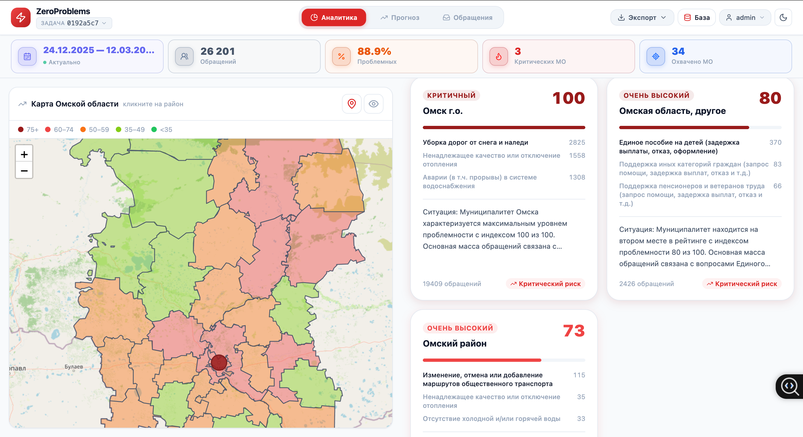
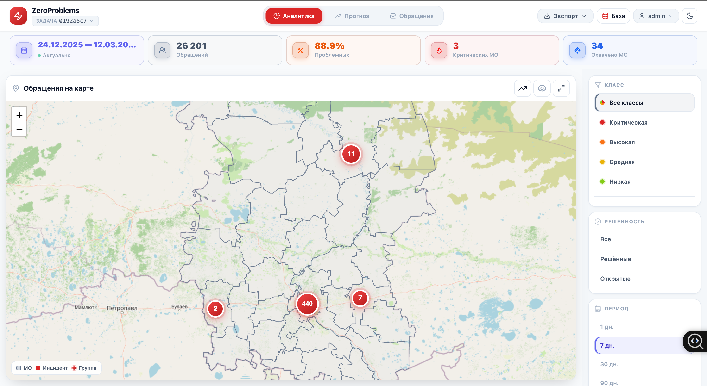
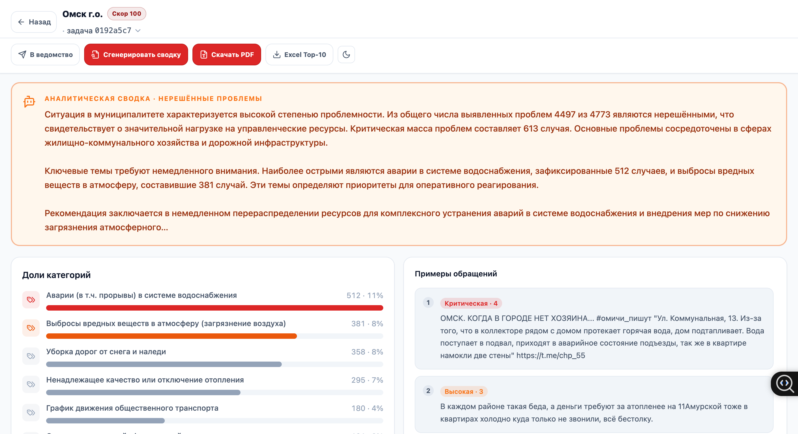
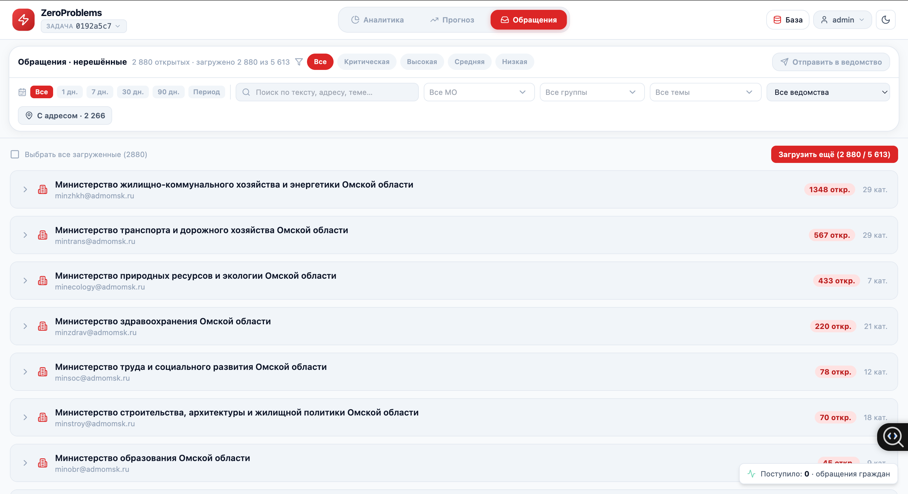
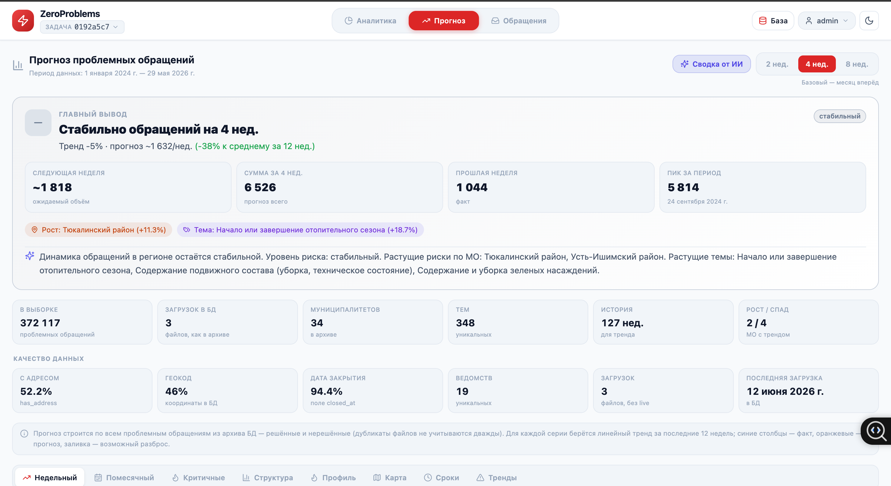
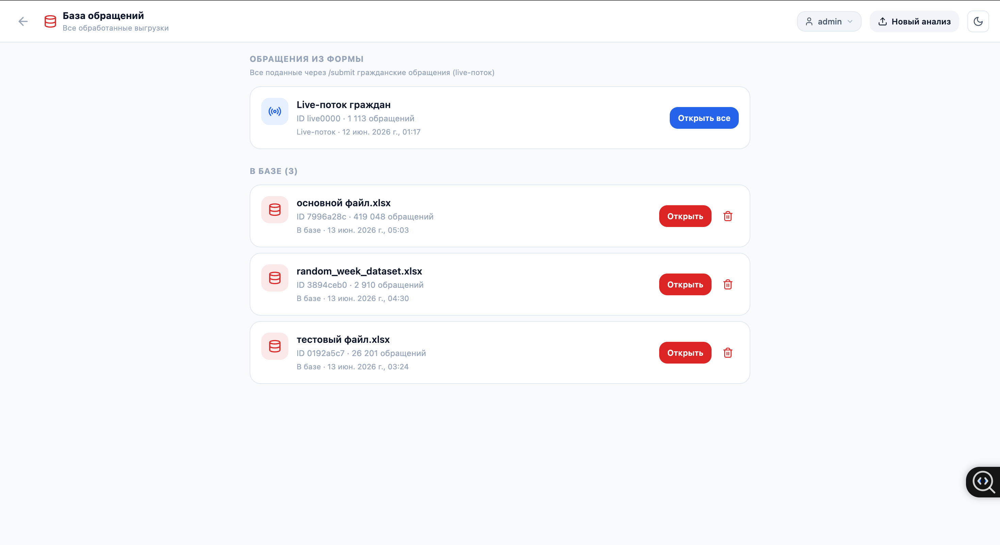

Веб-платформа, которая превращает обезличенную выгрузку обращений граждан в Excel в управленческую аналитику: классифицирует тяжесть каждого обращения дообученной RuBERT и показывает на карте, какие муниципалитеты Омской области в наиболее тяжёлом состоянии — с Health Score, drilldown по районам и LLM-справками.
// задача
Регион получает поток обращений граждан (жалобы, инциденты, аварии) — десятки тысяч строк в Excel-выгрузках. Вручную понять, где ситуация критическая, по каким темам и какие муниципалитеты требуют внимания в первую очередь, — невозможно. Нужен инструмент, который автоматически оценивает тяжесть каждого обращения и сводит это в понятную для управленцев картину по территориям.
// решение
End-to-end платформа: загрузка Excel → автоопределение формата → классификация тяжести дообученной RuBERT (ONNX Runtime, GPU/CPU) → агрегация в Health Score по муниципалитетам → интерактивная карта, дашборд и drilldown по районам. Поверх — LLM-справки и PDF-отчёты (локальная модель через Ollama, без внешних API), прогноз динамики, ролевой доступ (админ / оператор / аналитик), живая лента и форма подачи обращений. Всё разворачивается одной командой через Docker Compose.
// что сделали
// интерфейс






// пайплайн
Excel — обращения граждан │ Парсинг — автоформат, очистка │ RuBERT / ONNX — тяжесть 0–4 │ Health Score — агрегация по МО │ Карта · дашборд · drilldown │ LLM-справки — Ollama + PDF
// стек